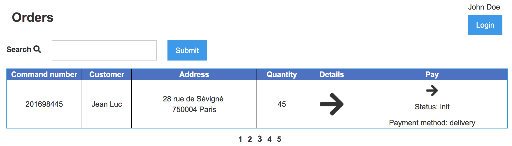

<style>
.markdown-body {
  box-sizing: border-box;
  min-width: 200px;
  max-width: 980px;
margin: 0 auto;
padding: 45px;
}

@media (max-width: 767px) {
  .markdown-body {
padding: 15px;
  }
}
</style>
<article class="markdown-body">
<!DOCTYPE html>
<html>
<head>
  <title>chap5/README.md</title>
  <link rel="stylesheet" href="../.github-markdown-css/github-markdown.css">
</head>
<body>
<div class="markdown-heading"><h1 class="heading-element">Chapter 5 - React and Remote props</h1><a id="user-content-chapter-5---react-and-remote-props" class="anchor" aria-label="Permalink: Chapter 5 - React and Remote props" href="#chapter-5---react-and-remote-props"><span aria-hidden="true" class="octicon octicon-link"></span></a></div>
<p><em>Estimated time to finish chapter: 3.5 days.</em></p>
<p>In this chapter, we will put our web app on a server with <strong>Elixir</strong>. We will
modify the architecture of our <strong>React</strong> application to be able to load
data from the server, <strong>without</strong> reloading all the pages. This is called an asynchronous call.</p>
<p>This chapter is one of the hardest to understand, as it forces you to create a Web App the same way we do it at KBRW. There are a lot of ways to build a WebApp, but experience taught us this architecture works best for our needs.</p>
<p><em>If you have any question, please ask in the #formation Slack channel.</em></p>
<div class="markdown-heading"><h2 class="heading-element">Step 0 - Put the React front on the server.</h2><a id="user-content-step-0---put-the-react-front-on-the-server" class="anchor" aria-label="Permalink: Step 0 - Put the React front on the server." href="#step-0---put-the-react-front-on-the-server"><span aria-hidden="true" class="octicon octicon-link"></span></a></div>
<p>Remember <a href="chap2.html"><strong>Chapter 2</strong></a> ? Well, we're going to use our <code>Plug.Router</code> again :)</p>
<p>Until now, to test if our front was working, we were loading the <code>index.html</code> file in <code>./priv/static</code>.<br>
We will change that, and tell our router where to fetch the index file.</p>
<p>First, we need to use a macro that will return our files in <code>/priv/static</code> on a
<strong>URL</strong>.<br>
For that, we will use the <a href="https://hexdocs.pm/plug/Plug.Static.html" rel="nofollow"><strong><code>Plug.Static</code></strong></a> module.</p>
<p><em>As always, go read some of the documentation :)</em></p>
<div class="highlight highlight-source-elixir"><pre><span class="pl-en">plug</span> <span class="pl-v">Plug.Static</span><span class="pl-kos">,</span> <span class="pl-pds">from: </span><span class="pl-s">"priv/static"</span><span class="pl-kos">,</span> <span class="pl-pds">at: </span><span class="pl-s">"/static"</span></pre></div>
<p>Then, we need to return our <code>index.html</code> on calls that don't match a specific route.</p>
<div class="highlight highlight-source-elixir"><pre><span class="pl-en">get</span> <span class="pl-c">_</span><span class="pl-kos">,</span> <span class="pl-pds">do: </span><span class="pl-en">send_file</span><span class="pl-kos">(</span><span class="pl-s1">conn</span><span class="pl-kos">,</span> <span class="pl-c1">200</span><span class="pl-kos">,</span> <span class="pl-s">"priv/static/index.html"</span><span class="pl-kos">)</span></pre></div>
<p><em>That way, when the user is not interacting with our <strong>REST api</strong>, he will be directed to our front page.</em></p>
<p>Finally, we need to change the paths to the Javascript and CSS in <code>index.html</code> to match the path on our server (<code>/static/styles.css</code> for instance).</p>
<p>Once that is done, let's launch our project and go to the root url:
<a href="http://localhost:4001" rel="nofollow">localhost:4001</a></p>
<hr>
<p><a target="_blank" rel="noopener noreferrer" href="../img/orders_page.png"></a></p>
<hr>
<div class="markdown-heading"><h2 class="heading-element">Step 1: Understand the architecture</h2><a id="user-content-step-1-understand-the-architecture" class="anchor" aria-label="Permalink: Step 1: Understand the architecture" href="#step-1-understand-the-architecture"><span aria-hidden="true" class="octicon octicon-link"></span></a></div>
<p>The goal of this part is to be able to render the right <strong>HTML</strong> elements depending on the route of the page, without having to reload the page. We want to retrieve information from the API and load it dynamically.</p>
<p>Remember that all our JS is executed <strong>Client side</strong>; this means the code lives inside your client browser.<br>
Only our API is server side (for now).</p>
<p><em><strong>All our Elixir code is Server side, the rest is Client Side.</strong></em></p>
<p><a target="_blank" rel="noopener noreferrer" href="../img/simplified_remote_props.png"></a></p>
<p>Here's how it's going to work:</p>
<ul>
<li>
<strong>Check for page change</strong>: we listen to url change events. That means the client is asking for a page using a new route.</li>
<li>
<strong>Verify route existence</strong>: Since this verification will occur client side, we will need to create a <code>routes</code> object. It will contain not only the list of available routes, but also various useful details about them, like properties, data and the React Components to display for this route.</li>
<li>
<strong>Download the remoteProps needed</strong>: our <code>route</code>'s data is called the <code>remoteProps</code> (the properties we're getting from the server, like a list of orders, or the details about an order). Downloading the remoteProps is simple:
<ol>
<li>We verify if all the <code>remoteProps</code> for our route were already downloaded from the API. No point in downloading them twice!</li>
<li>If we haven't downloaded all of them yet, we use the url in our <code>remoteProps</code> object to fetch them.</li>
<li>Then we add the downloaded data to the <code>props</code>, <a href="https://reactjs.org/docs/components-and-props.html" rel="nofollow">the data we send to our React components.</a>
</li>
</ol>
</li>
<li>Finally, we display all the Components needed by the requested <code>route</code>
</li>
</ul>
<div class="markdown-heading"><h2 class="heading-element">Step 2 - Write the front architecture</h2><a id="user-content-step-2---write-the-front-architecture" class="anchor" aria-label="Permalink: Step 2 - Write the front architecture" href="#step-2---write-the-front-architecture"><span aria-hidden="true" class="octicon octicon-link"></span></a></div>
<div class="markdown-heading"><h3 class="heading-element">Dependencies</h3><a id="user-content-dependencies" class="anchor" aria-label="Permalink: Dependencies" href="#dependencies"><span aria-hidden="true" class="octicon octicon-link"></span></a></div>
<p>Let's add some new dependencies that we'll need later:</p>
<div class="highlight highlight-source-js"><pre>    <span class="pl-s">"xhr2"</span>: <span class="pl-s">"^0.2.0"</span><span class="pl-kos">,</span>
    <span class="pl-s">"cookie"</span>: <span class="pl-s">"~0.4.1"</span><span class="pl-kos">,</span>
    <span class="pl-s">"qs"</span>: <span class="pl-s">"~6.9.4"</span><span class="pl-kos">,</span></pre></div>
<p><code>cookie</code> lets you write and read cookies more easily; <code>qs</code> is helpful to parse <a href="https://en.wikipedia.org/wiki/Query_string" rel="nofollow">Query Parameters</a>,; and <code>xhr2</code> is the library we use to make our http calls.</p>
<p><em>There is a reason we use <code>xhr2</code>, the "legacy" library, instead of the new fetch API, and it mostly has to do with error handling: fetch doesn't reject on http error codes... But xhr2 does.</em></p>
<div class="markdown-heading"><h3 class="heading-element">Event Listener</h3><a id="user-content-event-listener" class="anchor" aria-label="Permalink: Event Listener" href="#event-listener"><span aria-hidden="true" class="octicon octicon-link"></span></a></div>
<p>Let's create a <code>onPathChange</code> function and add an event listener to call it.<br>
You can see more about the <code>popstate</code> event <a href="https://developer.mozilla.org/fr/docs/Web/Events/popstate" rel="nofollow">here</a>.</p>
<div class="highlight highlight-source-js"><pre><span class="pl-k">function</span> <span class="pl-en">onPathChange</span><span class="pl-kos">(</span><span class="pl-kos">)</span> <span class="pl-kos">{</span>
  <span class="pl-v">ReactDOM</span><span class="pl-kos">.</span><span class="pl-en">render</span><span class="pl-kos">(</span><span class="pl-c1">&lt;</span><span class="pl-ent">Page</span> <span class="pl-c1">/</span><span class="pl-c1">&gt;</span><span class="pl-kos">,</span> <span class="pl-smi">document</span><span class="pl-kos">.</span><span class="pl-en">getElementById</span><span class="pl-kos">(</span><span class="pl-s">'root'</span><span class="pl-kos">)</span><span class="pl-kos">)</span><span class="pl-kos">;</span>
<span class="pl-kos">}</span>

<span class="pl-smi">window</span><span class="pl-kos">.</span><span class="pl-en">addEventListener</span><span class="pl-kos">(</span><span class="pl-s">"popstate"</span><span class="pl-kos">,</span> <span class="pl-kos">(</span><span class="pl-kos">)</span><span class="pl-c1">=&gt;</span><span class="pl-kos">{</span> <span class="pl-en">onPathChange</span><span class="pl-kos">(</span><span class="pl-kos">)</span> <span class="pl-kos">}</span><span class="pl-kos">)</span>
<span class="pl-en">onPathChange</span><span class="pl-kos">(</span><span class="pl-kos">)</span> <span class="pl-c">// We also call onPathChange once when the js is loaded</span></pre></div>
<div class="markdown-heading"><h3 class="heading-element">Parse our requested route</h3><a id="user-content-parse-our-requested-route" class="anchor" aria-label="Permalink: Parse our requested route" href="#parse-our-requested-route"><span aria-hidden="true" class="octicon octicon-link"></span></a></div>
<p>Now we are going to evolve our <code>onPathChange</code> function step by step so it renders the right components with the associated data,
depending on several parameters like the current URL.
Let's first get the property of our new page (path, query-string and cookie).</p>
<p>Don't forget to import the query-string and cookie JS library:</p>
<div class="highlight highlight-source-js"><pre><span class="pl-k">var</span> <span class="pl-v">Qs</span> <span class="pl-c1">=</span> <span class="pl-en">require</span><span class="pl-kos">(</span><span class="pl-s">'qs'</span><span class="pl-kos">)</span>
<span class="pl-k">var</span> <span class="pl-v">Cookie</span> <span class="pl-c1">=</span> <span class="pl-en">require</span><span class="pl-kos">(</span><span class="pl-s">'cookie'</span><span class="pl-kos">)</span></pre></div>
<p>And then modify your <code>onPathChange</code> function.<br>
Here we're going to retrieve the requested path and various parameters using the <a href="https://www.w3schools.com/jsref/obj_location.asp" rel="nofollow">location object</a>.</p>
<div class="highlight highlight-source-js"><pre><span class="pl-k">function</span> <span class="pl-en">onPathChange</span><span class="pl-kos">(</span><span class="pl-kos">)</span> <span class="pl-kos">{</span>
  <span class="pl-k">var</span> <span class="pl-s1">path</span> <span class="pl-c1">=</span> <span class="pl-s1">location</span><span class="pl-kos">.</span><span class="pl-c1">pathname</span>
  <span class="pl-k">var</span> <span class="pl-s1">qs</span> <span class="pl-c1">=</span> <span class="pl-v">Qs</span><span class="pl-kos">.</span><span class="pl-en">parse</span><span class="pl-kos">(</span><span class="pl-s1">location</span><span class="pl-kos">.</span><span class="pl-c1">search</span><span class="pl-kos">.</span><span class="pl-en">slice</span><span class="pl-kos">(</span><span class="pl-c1">1</span><span class="pl-kos">)</span><span class="pl-kos">)</span>
  <span class="pl-k">var</span> <span class="pl-s1">cookies</span> <span class="pl-c1">=</span> <span class="pl-v">Cookie</span><span class="pl-kos">.</span><span class="pl-en">parse</span><span class="pl-kos">(</span><span class="pl-smi">document</span><span class="pl-kos">.</span><span class="pl-c1">cookie</span><span class="pl-kos">)</span>

  <span class="pl-v">ReactDOM</span><span class="pl-kos">.</span><span class="pl-en">render</span><span class="pl-kos">(</span><span class="pl-c1">&lt;</span><span class="pl-ent">Page</span> <span class="pl-c1">/</span><span class="pl-c1">&gt;</span><span class="pl-kos">,</span> <span class="pl-smi">document</span><span class="pl-kos">.</span><span class="pl-en">getElementById</span><span class="pl-kos">(</span><span class="pl-s">'root'</span><span class="pl-kos">)</span><span class="pl-kos">)</span><span class="pl-kos">;</span>
<span class="pl-kos">}</span></pre></div>
<p>Now we will declare a global variable that will describe the global state of our browser.<br>
It will become the <a href="https://reactjs.org/docs/components-and-props.html" rel="nofollow">props</a> given to all our <strong>React</strong> components.<br>
Note that each component will send these global properties to its children, along with additional data related to each specific component.</p>
<div class="highlight highlight-source-js"><pre><span class="pl-k">var</span> <span class="pl-s1">browserState</span> <span class="pl-c1">=</span> <span class="pl-kos">{</span><span class="pl-kos">}</span>

<span class="pl-k">function</span> <span class="pl-en">onPathChange</span><span class="pl-kos">(</span><span class="pl-kos">)</span> <span class="pl-kos">{</span>
  <span class="pl-kos">[</span>...<span class="pl-kos">]</span>
  <span class="pl-k">var</span> <span class="pl-s1">cookies</span> <span class="pl-c1">=</span> <span class="pl-v">Cookie</span><span class="pl-kos">.</span><span class="pl-en">parse</span><span class="pl-kos">(</span><span class="pl-smi">document</span><span class="pl-kos">.</span><span class="pl-c1">cookie</span><span class="pl-kos">)</span>

  <span class="pl-s1">browserState</span> <span class="pl-c1">=</span> <span class="pl-kos">{</span>
    ...<span class="pl-s1">browserState</span><span class="pl-kos">,</span> 
    <span class="pl-c1">path</span>: <span class="pl-s1">path</span><span class="pl-kos">,</span> 
    <span class="pl-c1">qs</span>: <span class="pl-s1">qs</span><span class="pl-kos">,</span> 
    <span class="pl-c1">cookie</span>: <span class="pl-s1">cookies</span>
  <span class="pl-kos">}</span>
  <span class="pl-kos">[</span>...<span class="pl-kos">]</span>
<span class="pl-kos">}</span></pre></div>
<div class="markdown-heading"><h3 class="heading-element">The routes object</h3><a id="user-content-the-routes-object" class="anchor" aria-label="Permalink: The routes object" href="#the-routes-object"><span aria-hidden="true" class="octicon octicon-link"></span></a></div>
<p>Let's create a <code>routes</code> object (outside of the functions in your JavaScript). It's going to tell us which React component you have to display depending on the requested route.</p>
<p><em>We will use the path <code>/</code> for the orders list page and <code>/order/&lt;order_id&gt;</code> for the order we want to know more about.</em></p>
<div class="highlight highlight-source-js"><pre><span class="pl-k">var</span> <span class="pl-s1">routes</span> <span class="pl-c1">=</span> <span class="pl-kos">{</span>
  <span class="pl-s">"orders"</span>: <span class="pl-kos">{</span>
    <span class="pl-en">path</span>: <span class="pl-kos">(</span><span class="pl-s1">params</span><span class="pl-kos">)</span> <span class="pl-c1">=&gt;</span> <span class="pl-kos">{</span>
      <span class="pl-k">return</span> <span class="pl-s">"/"</span><span class="pl-kos">;</span>
    <span class="pl-kos">}</span><span class="pl-kos">,</span>
    <span class="pl-en">match</span>: <span class="pl-kos">(</span><span class="pl-s1">path</span><span class="pl-kos">,</span> <span class="pl-s1">qs</span><span class="pl-kos">)</span> <span class="pl-c1">=&gt;</span> <span class="pl-kos">{</span>
      <span class="pl-k">return</span> <span class="pl-kos">(</span><span class="pl-s1">path</span> <span class="pl-c1">==</span> <span class="pl-s">"/"</span><span class="pl-kos">)</span> <span class="pl-c1">&amp;&amp;</span> <span class="pl-kos">{</span><span class="pl-c1">handlerPath</span>: <span class="pl-kos">[</span><span class="pl-v">Layout</span><span class="pl-kos">,</span> <span class="pl-v">Header</span><span class="pl-kos">,</span> <span class="pl-v">Orders</span><span class="pl-kos">]</span><span class="pl-kos">}</span> <span class="pl-c">// Note that we use the "&amp;&amp;" expression to simulate a IF statement</span>
    <span class="pl-kos">}</span>
  <span class="pl-kos">}</span><span class="pl-kos">,</span> 
  <span class="pl-s">"order"</span>: <span class="pl-kos">{</span>
    <span class="pl-en">path</span>: <span class="pl-kos">(</span><span class="pl-s1">params</span><span class="pl-kos">)</span> <span class="pl-c1">=&gt;</span> <span class="pl-kos">{</span>
      <span class="pl-k">return</span> <span class="pl-s">"/order/"</span> <span class="pl-c1">+</span> <span class="pl-s1">params</span><span class="pl-kos">;</span>
    <span class="pl-kos">}</span><span class="pl-kos">,</span>
    <span class="pl-en">match</span>: <span class="pl-kos">(</span><span class="pl-s1">path</span><span class="pl-kos">,</span> <span class="pl-s1">qs</span><span class="pl-kos">)</span> <span class="pl-c1">=&gt;</span> <span class="pl-kos">{</span>
      <span class="pl-k">var</span> <span class="pl-s1">r</span> <span class="pl-c1">=</span> <span class="pl-k">new</span> <span class="pl-v">RegExp</span><span class="pl-kos">(</span><span class="pl-s">"/order/([^/]*)$"</span><span class="pl-kos">)</span><span class="pl-kos">.</span><span class="pl-en">exec</span><span class="pl-kos">(</span><span class="pl-s1">path</span><span class="pl-kos">)</span>
      <span class="pl-k">return</span> <span class="pl-s1">r</span> <span class="pl-c1">&amp;&amp;</span> <span class="pl-kos">{</span><span class="pl-c1">handlerPath</span>: <span class="pl-kos">[</span><span class="pl-v">Layout</span><span class="pl-kos">,</span> <span class="pl-v">Header</span><span class="pl-kos">,</span> <span class="pl-v">Order</span><span class="pl-kos">]</span><span class="pl-kos">,</span>  <span class="pl-c1">order_id</span>: <span class="pl-s1">r</span><span class="pl-kos">[</span><span class="pl-c1">1</span><span class="pl-kos">]</span><span class="pl-kos">}</span> <span class="pl-c">// Note that we use the "&amp;&amp;" expression to simulate a IF statement</span>
    <span class="pl-kos">}</span>
  <span class="pl-kos">}</span>
<span class="pl-kos">}</span></pre></div>
<ul>
<li>The first part of our return in the <code>match</code> function tries to match the path. If it's true we return an object containing data about the React components, and the props (the props are optionnal).</li>
<li>
<code>HandlerPath</code> contains the list of React components to render, each being a child of the one before (Order is a child of Header, Header is a child of Layout).</li>
</ul>
<p>To use this, we will need to define the <strong>React Classes</strong> <code>Layout</code> (here our layout is empty and will be built later), <code>Header</code> (The header of our website), <code>Orders</code> (the page with the orders list) and <code>Order</code> (the page with the order description). This will be done in the next steps.</p>
<div class="markdown-heading"><h3 class="heading-element">Render our components</h3><a id="user-content-render-our-components" class="anchor" aria-label="Permalink: Render our components" href="#render-our-components"><span aria-hidden="true" class="octicon octicon-link"></span></a></div>
<p>To render the components present inside <code>handlerPath</code>, we're going to create a new React class named <strong>Child</strong> that will render them recursively.</p>
<p><em>It is just going to render the first of the requested components, with the rest of the list in its props. This ChildHandler, for instance Layout or Header, is going to have to do the same thing so each component is indeed rendered recursively.</em></p>
<div class="highlight highlight-source-js"><pre><span class="pl-k">var</span> <span class="pl-v">Child</span> <span class="pl-c1">=</span> <span class="pl-en">createReactClass</span><span class="pl-kos">(</span><span class="pl-kos">{</span>
  <span class="pl-en">render</span><span class="pl-kos">(</span><span class="pl-kos">)</span><span class="pl-kos">{</span>
    <span class="pl-k">var</span> <span class="pl-kos">[</span><span class="pl-v">ChildHandler</span><span class="pl-kos">,</span> ...<span class="pl-s1">rest</span><span class="pl-kos">]</span> <span class="pl-c1">=</span> <span class="pl-smi">this</span><span class="pl-kos">.</span><span class="pl-c1">props</span><span class="pl-kos">.</span><span class="pl-c1">handlerPath</span>
    <span class="pl-k">return</span> <span class="pl-c1">&lt;</span><span class="pl-v">ChildHandler</span> <span class="pl-kos">{</span>...<span class="pl-smi">this</span><span class="pl-kos">.</span><span class="pl-c1">props</span><span class="pl-kos">}</span> <span class="pl-c1">handlerPath</span><span class="pl-c1">=</span><span class="pl-kos">{</span><span class="pl-s1">rest</span><span class="pl-kos">}</span> <span class="pl-c1">/</span><span class="pl-c1">&gt;</span>
  <span class="pl-kos">}</span>
<span class="pl-kos">}</span><span class="pl-kos">)</span></pre></div>
<p>With these new objects (<code>routes</code> and <code>Child</code>), we can now update our <code>onPathChange</code> function to render
the correct Components depending on the route.</p>
<p><em>If you dont understand where we are going, go take another look at the diagram above</em></p>
<div class="highlight highlight-source-js"><pre><span class="pl-k">var</span> <span class="pl-s1">browserState</span> <span class="pl-c1">=</span> <span class="pl-kos">{</span><span class="pl-c1">Child</span>: <span class="pl-v">Child</span><span class="pl-kos">}</span>

<span class="pl-k">function</span> <span class="pl-en">onPathChange</span><span class="pl-kos">(</span><span class="pl-kos">)</span> <span class="pl-kos">{</span>
  <span class="pl-kos">[</span>...<span class="pl-kos">]</span>
  <span class="pl-s1">browserState</span> <span class="pl-c1">=</span> <span class="pl-kos">{</span>...<span class="pl-kos">}</span>
  <span class="pl-k">var</span> <span class="pl-s1">route</span><span class="pl-kos">,</span> 
  
  <span class="pl-c">// We try to match the requested path to one our our routes</span>
  <span class="pl-en">for</span> <span class="pl-kos">(</span><span class="pl-s1">var</span> <span class="pl-s1">key</span> <span class="pl-k">in</span> <span class="pl-s1">routes</span><span class="pl-kos">)</span> <span class="pl-kos">{</span>
    <span class="pl-s1">routeProps</span> <span class="pl-c1">=</span> <span class="pl-s1">routes</span><span class="pl-kos">[</span><span class="pl-s1">key</span><span class="pl-kos">]</span><span class="pl-kos">.</span><span class="pl-en">match</span><span class="pl-kos">(</span><span class="pl-s1">path</span><span class="pl-kos">,</span> <span class="pl-s1">qs</span><span class="pl-kos">)</span>
    <span class="pl-k">if</span> <span class="pl-kos">(</span><span class="pl-s1">routeProps</span><span class="pl-kos">)</span><span class="pl-kos">{</span>
        <span class="pl-s1">route</span> <span class="pl-c1">=</span> <span class="pl-s1">key</span>
          <span class="pl-k">break</span><span class="pl-kos">;</span>
    <span class="pl-kos">}</span>
  <span class="pl-kos">}</span>

  <span class="pl-c">// We add the route name and the route Props to the global browserState</span>
  <span class="pl-s1">browserState</span> <span class="pl-c1">=</span> <span class="pl-kos">{</span>
    ...<span class="pl-s1">browserState</span><span class="pl-kos">,</span>
    ...<span class="pl-s1">routeProps</span><span class="pl-kos">,</span>
    <span class="pl-c1">route</span>: <span class="pl-s1">route</span>
  <span class="pl-kos">}</span>

  <span class="pl-c">// If the path in the URL doesn't match with any of our routes, we render an Error component (we will have to create it later)</span>
  <span class="pl-s1">if</span><span class="pl-kos">(</span><span class="pl-c1">!</span><span class="pl-s1">route</span><span class="pl-kos">)</span>
    <span class="pl-s1">return</span> <span class="pl-v">ReactDOM</span><span class="pl-kos">.</span><span class="pl-en">render</span><span class="pl-kos">(</span><span class="pl-c1">&lt;</span><span class="pl-ent">ErrorPage</span> <span class="pl-c1">message</span><span class="pl-c1">=</span><span class="pl-kos">{</span><span class="pl-s">"Not Found"</span><span class="pl-kos">}</span> <span class="pl-c1">code</span><span class="pl-c1">=</span><span class="pl-kos">{</span><span class="pl-c1">404</span><span class="pl-kos">}</span><span class="pl-c1">/</span><span class="pl-c1">&gt;</span><span class="pl-kos">,</span> <span class="pl-smi">document</span><span class="pl-kos">.</span><span class="pl-en">getElementById</span><span class="pl-kos">(</span><span class="pl-s">'root'</span><span class="pl-kos">)</span><span class="pl-kos">)</span>

  <span class="pl-c">// If we found a match, we render the Child component, which will render the handlerPath components recursively, remember ? ;)</span>
  <span class="pl-v">ReactDOM</span><span class="pl-kos">.</span><span class="pl-en">render</span><span class="pl-kos">(</span><span class="pl-c1">&lt;</span><span class="pl-ent">Child</span> <span class="pl-kos">{</span>...<span class="pl-s1">browserState</span><span class="pl-kos">}</span><span class="pl-c1">/</span><span class="pl-c1">&gt;</span><span class="pl-kos">,</span> <span class="pl-smi">document</span><span class="pl-kos">.</span><span class="pl-en">getElementById</span><span class="pl-kos">(</span><span class="pl-s">'root'</span><span class="pl-kos">)</span><span class="pl-kos">)</span>
<span class="pl-kos">}</span></pre></div>
<p>For now, only your empty <code>Layout</code> component is printed.<br>
Indeed, the <code>Child</code> class only renders the first element of the <code>handlerPath</code> list ; you need to modify the other components to call <code>Child</code> on your child class list :</p>
<div class="highlight highlight-source-js"><pre><span class="pl-k">var</span> <span class="pl-v">Layout</span> <span class="pl-c1">=</span> <span class="pl-en">createReactClass</span><span class="pl-kos">(</span><span class="pl-kos">{</span>
<span class="pl-en">render</span><span class="pl-kos">(</span><span class="pl-kos">)</span><span class="pl-kos">{</span>
  <span class="pl-k">return</span> <span class="pl-c1">&lt;</span><span class="pl-ent">JSXZ</span> <span class="pl-c1">in</span><span class="pl-c1">=</span><span class="pl-s">"orders"</span> <span class="pl-c1">sel</span><span class="pl-c1">=</span><span class="pl-s">".layout"</span><span class="pl-c1">&gt;</span>
      <span class="pl-c1">&lt;</span><span class="pl-ent">Z</span> <span class="pl-c1">sel</span><span class="pl-c1">=</span><span class="pl-s">".layout-container"</span><span class="pl-c1">&gt;</span>
        <span class="pl-c1">&lt;</span><span class="pl-s1">this</span><span class="pl-kos">.</span><span class="pl-s1">props</span><span class="pl-kos">.</span><span class="pl-v">Child</span> <span class="pl-kos">{</span>...<span class="pl-smi">this</span><span class="pl-kos">.</span><span class="pl-c1">props</span><span class="pl-kos">}</span><span class="pl-c1">/</span><span class="pl-c1">&gt;</span>
      <span class="pl-c1">&lt;</span><span class="pl-c1">/</span><span class="pl-ent">Z</span><span class="pl-c1">&gt;</span>
    <span class="pl-c1">&lt;</span><span class="pl-c1">/</span><span class="pl-ent">JSXZ</span><span class="pl-c1">&gt;</span>
  <span class="pl-kos">}</span>
<span class="pl-kos">}</span><span class="pl-kos">)</span></pre></div>
<p>This is creating a tree of component <strong>with only one branch</strong> (each component only has 1 child).<br>
It's going to allow us to modify the props of our <code>Layout</code> and propagate them to the other Components really easily.</p>
<hr>
<p><strong>Exercise:</strong></p>
<p>Create the different <strong>React</strong> classes that will compose our application: <code>Header</code>, <code>Orders</code>, <code>Order</code> and <code>ErrorPage</code>.<br>
Our Layout will have a <code>.layout-container</code> CSS class, our Header a <code>.header-container</code>, etc.<br>
As we want to have a <strong>one-branch tree</strong>,  our Layout <code>div</code> will contain our Header <code>div</code>, that will contain our container <code>div</code>. Modify your Webflow accordingly.</p>
<pre><code>  Layout
    |- Header
        |- Orders
</code></pre>
<p>Only the Layout and the Header components need to call <code>this.props.Child</code>, because the <code>hanlderPath</code> of the <code>routes</code> will always contain both of them followed by a specific child.</p>
<hr>
<div class="markdown-heading"><h2 class="heading-element">Step 3: Download the remoteProps from the API</h2><a id="user-content-step-3-download-the-remoteprops-from-the-api" class="anchor" aria-label="Permalink: Step 3: Download the remoteProps from the API" href="#step-3-download-the-remoteprops-from-the-api"><span aria-hidden="true" class="octicon octicon-link"></span></a></div>
<p>Now that our front is structured, we want to download the data from our server API to display it in our components <code>Orders</code> and <code>Order</code>.</p>
<div class="markdown-heading"><h3 class="heading-element">HTTP requests</h3><a id="user-content-http-requests" class="anchor" aria-label="Permalink: HTTP requests" href="#http-requests"><span aria-hidden="true" class="octicon octicon-link"></span></a></div>
<p>If we want to fetch information from our API, we will need to make <strong>HTTP</strong> call to our <strong><code>Server.Router</code></strong>.<br>
So, we will add a <strong><code>HTTP</code></strong> module to send the requests.</p>
<div class="highlight highlight-source-js"><pre><span class="pl-k">var</span> <span class="pl-v">XMLHttpRequest</span> <span class="pl-c1">=</span> <span class="pl-en">require</span><span class="pl-kos">(</span><span class="pl-s">"xhr2"</span><span class="pl-kos">)</span>
<span class="pl-k">var</span> <span class="pl-c1">HTTP</span> <span class="pl-c1">=</span> <span class="pl-k">new</span> <span class="pl-kos">(</span><span class="pl-k">function</span><span class="pl-kos">(</span><span class="pl-kos">)</span><span class="pl-kos">{</span>
  <span class="pl-smi">this</span><span class="pl-kos">.</span><span class="pl-en">get</span> <span class="pl-c1">=</span> <span class="pl-kos">(</span><span class="pl-s1">url</span><span class="pl-kos">)</span><span class="pl-c1">=&gt;</span><span class="pl-smi">this</span><span class="pl-kos">.</span><span class="pl-en">req</span><span class="pl-kos">(</span><span class="pl-s">'GET'</span><span class="pl-kos">,</span><span class="pl-s1">url</span><span class="pl-kos">)</span>
  <span class="pl-smi">this</span><span class="pl-kos">.</span><span class="pl-en">delete</span> <span class="pl-c1">=</span> <span class="pl-kos">(</span><span class="pl-s1">url</span><span class="pl-kos">)</span><span class="pl-c1">=&gt;</span><span class="pl-smi">this</span><span class="pl-kos">.</span><span class="pl-en">req</span><span class="pl-kos">(</span><span class="pl-s">'DELETE'</span><span class="pl-kos">,</span><span class="pl-s1">url</span><span class="pl-kos">)</span>
  <span class="pl-smi">this</span><span class="pl-kos">.</span><span class="pl-en">post</span> <span class="pl-c1">=</span> <span class="pl-kos">(</span><span class="pl-s1">url</span><span class="pl-kos">,</span><span class="pl-s1">data</span><span class="pl-kos">)</span><span class="pl-c1">=&gt;</span><span class="pl-smi">this</span><span class="pl-kos">.</span><span class="pl-en">req</span><span class="pl-kos">(</span><span class="pl-s">'POST'</span><span class="pl-kos">,</span><span class="pl-s1">url</span><span class="pl-kos">,</span><span class="pl-s1">data</span><span class="pl-kos">)</span>
  <span class="pl-smi">this</span><span class="pl-kos">.</span><span class="pl-en">put</span> <span class="pl-c1">=</span> <span class="pl-kos">(</span><span class="pl-s1">url</span><span class="pl-kos">,</span><span class="pl-s1">data</span><span class="pl-kos">)</span><span class="pl-c1">=&gt;</span><span class="pl-smi">this</span><span class="pl-kos">.</span><span class="pl-en">req</span><span class="pl-kos">(</span><span class="pl-s">'PUT'</span><span class="pl-kos">,</span><span class="pl-s1">url</span><span class="pl-kos">,</span><span class="pl-s1">data</span><span class="pl-kos">)</span>

  <span class="pl-smi">this</span><span class="pl-kos">.</span><span class="pl-en">req</span> <span class="pl-c1">=</span> <span class="pl-kos">(</span><span class="pl-s1">method</span><span class="pl-kos">,</span><span class="pl-s1">url</span><span class="pl-kos">,</span><span class="pl-s1">data</span><span class="pl-kos">)</span><span class="pl-c1">=&gt;</span> <span class="pl-k">new</span> <span class="pl-v">Promise</span><span class="pl-kos">(</span><span class="pl-kos">(</span><span class="pl-s1">resolve</span><span class="pl-kos">,</span> <span class="pl-s1">reject</span><span class="pl-kos">)</span> <span class="pl-c1">=&gt;</span> <span class="pl-kos">{</span>
    <span class="pl-k">var</span> <span class="pl-s1">req</span> <span class="pl-c1">=</span> <span class="pl-k">new</span> <span class="pl-v">XMLHttpRequest</span><span class="pl-kos">(</span><span class="pl-kos">)</span>
    <span class="pl-s1">req</span><span class="pl-kos">.</span><span class="pl-en">open</span><span class="pl-kos">(</span><span class="pl-s1">method</span><span class="pl-kos">,</span> <span class="pl-s1">url</span><span class="pl-kos">)</span>
    <span class="pl-s1">req</span><span class="pl-kos">.</span><span class="pl-c1">responseType</span> <span class="pl-c1">=</span> <span class="pl-s">"text"</span>
    <span class="pl-s1">req</span><span class="pl-kos">.</span><span class="pl-en">setRequestHeader</span><span class="pl-kos">(</span><span class="pl-s">"accept"</span><span class="pl-kos">,</span><span class="pl-s">"application/json,*/*;0.8"</span><span class="pl-kos">)</span>
    <span class="pl-s1">req</span><span class="pl-kos">.</span><span class="pl-en">setRequestHeader</span><span class="pl-kos">(</span><span class="pl-s">"content-type"</span><span class="pl-kos">,</span><span class="pl-s">"application/json"</span><span class="pl-kos">)</span>
    <span class="pl-s1">req</span><span class="pl-kos">.</span><span class="pl-en">onload</span> <span class="pl-c1">=</span> <span class="pl-kos">(</span><span class="pl-kos">)</span><span class="pl-c1">=&gt;</span><span class="pl-kos">{</span>
      <span class="pl-k">if</span><span class="pl-kos">(</span><span class="pl-s1">req</span><span class="pl-kos">.</span><span class="pl-c1">status</span> <span class="pl-c1">&gt;=</span> <span class="pl-c1">200</span> <span class="pl-c1">&amp;&amp;</span> <span class="pl-s1">req</span><span class="pl-kos">.</span><span class="pl-c1">status</span> <span class="pl-c1">&lt;</span> <span class="pl-c1">300</span><span class="pl-kos">)</span><span class="pl-kos">{</span>
      <span class="pl-s1">resolve</span><span class="pl-kos">(</span><span class="pl-s1">req</span><span class="pl-kos">.</span><span class="pl-c1">responseText</span> <span class="pl-c1">&amp;&amp;</span> <span class="pl-c1">JSON</span><span class="pl-kos">.</span><span class="pl-en">parse</span><span class="pl-kos">(</span><span class="pl-s1">req</span><span class="pl-kos">.</span><span class="pl-c1">responseText</span><span class="pl-kos">)</span><span class="pl-kos">)</span>
      <span class="pl-kos">}</span><span class="pl-k">else</span><span class="pl-kos">{</span>
      <span class="pl-s1">reject</span><span class="pl-kos">(</span><span class="pl-kos">{</span><span class="pl-c1">http_code</span>: <span class="pl-s1">req</span><span class="pl-kos">.</span><span class="pl-c1">status</span><span class="pl-kos">}</span><span class="pl-kos">)</span>
      <span class="pl-kos">}</span>
    <span class="pl-kos">}</span>
  <span class="pl-s1">req</span><span class="pl-kos">.</span><span class="pl-en">onerror</span> <span class="pl-c1">=</span> <span class="pl-kos">(</span><span class="pl-s1">err</span><span class="pl-kos">)</span><span class="pl-c1">=&gt;</span><span class="pl-kos">{</span>
    <span class="pl-s1">reject</span><span class="pl-kos">(</span><span class="pl-kos">{</span><span class="pl-c1">http_code</span>: <span class="pl-s1">req</span><span class="pl-kos">.</span><span class="pl-c1">status</span><span class="pl-kos">}</span><span class="pl-kos">)</span>
  <span class="pl-kos">}</span>
  <span class="pl-s1">req</span><span class="pl-kos">.</span><span class="pl-en">send</span><span class="pl-kos">(</span><span class="pl-s1">data</span> <span class="pl-c1">&amp;&amp;</span> <span class="pl-c1">JSON</span><span class="pl-kos">.</span><span class="pl-en">stringify</span><span class="pl-kos">(</span><span class="pl-s1">data</span><span class="pl-kos">)</span><span class="pl-kos">)</span>
  <span class="pl-kos">}</span><span class="pl-kos">)</span>
<span class="pl-kos">}</span><span class="pl-kos">)</span><span class="pl-kos">(</span><span class="pl-kos">)</span></pre></div>
<p>Take some time to understand this code. If you don't know what a <code>Promise</code> is, take a look at this article by Mozilla: <a href="https://developer.mozilla.org/fr/docs/Web/JavaScript/Guide/Utiliser_les_promesses" rel="nofollow">here</a>.</p>
<div class="markdown-heading"><h3 class="heading-element">Our remoteProps object</h3><a id="user-content-our-remoteprops-object" class="anchor" aria-label="Permalink: Our remoteProps object" href="#our-remoteprops-object"><span aria-hidden="true" class="octicon octicon-link"></span></a></div>
<p>Let's create the <code>remoteProps</code> object that will contains the URL of the API to request to obtain the data (prop), as well as the name of this prop.</p>
<div class="highlight highlight-source-js"><pre><span class="pl-k">var</span> <span class="pl-s1">remoteProps</span> <span class="pl-c1">=</span> <span class="pl-kos">{</span>
  <span class="pl-en">user</span>: <span class="pl-kos">(</span><span class="pl-s1">props</span><span class="pl-kos">)</span><span class="pl-c1">=&gt;</span><span class="pl-kos">{</span>
    <span class="pl-k">return</span> <span class="pl-kos">{</span>
      <span class="pl-c1">url</span>: <span class="pl-s">"/api/me"</span><span class="pl-kos">,</span>
      <span class="pl-c1">prop</span>: <span class="pl-s">"user"</span>
    <span class="pl-kos">}</span>
  <span class="pl-kos">}</span><span class="pl-kos">,</span>
  <span class="pl-en">orders</span>: <span class="pl-kos">(</span><span class="pl-s1">props</span><span class="pl-kos">)</span><span class="pl-c1">=&gt;</span><span class="pl-kos">{</span>
    <span class="pl-k">if</span><span class="pl-kos">(</span><span class="pl-c1">!</span><span class="pl-s1">props</span><span class="pl-kos">.</span><span class="pl-c1">user</span><span class="pl-kos">)</span>
      <span class="pl-k">return</span>
    <span class="pl-k">var</span> <span class="pl-s1">qs</span> <span class="pl-c1">=</span> <span class="pl-kos">{</span>...<span class="pl-s1">props</span><span class="pl-kos">.</span><span class="pl-c1">qs</span><span class="pl-kos">,</span> <span class="pl-c1">user_id</span>: <span class="pl-s1">props</span><span class="pl-kos">.</span><span class="pl-c1">user</span><span class="pl-kos">.</span><span class="pl-c1">value</span><span class="pl-kos">.</span><span class="pl-c1">id</span><span class="pl-kos">}</span>
    <span class="pl-k">var</span> <span class="pl-s1">query</span> <span class="pl-c1">=</span> <span class="pl-v">Qs</span><span class="pl-kos">.</span><span class="pl-en">stringify</span><span class="pl-kos">(</span><span class="pl-s1">qs</span><span class="pl-kos">)</span>
    <span class="pl-k">return</span> <span class="pl-kos">{</span>
      <span class="pl-c1">url</span>: <span class="pl-s">"/api/orders"</span> <span class="pl-c1">+</span> <span class="pl-kos">(</span><span class="pl-s1">query</span> <span class="pl-c1">==</span> <span class="pl-s">''</span> ? <span class="pl-s">''</span> : <span class="pl-s">'?'</span> <span class="pl-c1">+</span> <span class="pl-s1">query</span><span class="pl-kos">)</span><span class="pl-kos">,</span>
      <span class="pl-c1">prop</span>: <span class="pl-s">"orders"</span>
    <span class="pl-kos">}</span>
  <span class="pl-kos">}</span><span class="pl-kos">,</span>
  <span class="pl-en">order</span>: <span class="pl-kos">(</span><span class="pl-s1">props</span><span class="pl-kos">)</span><span class="pl-c1">=&gt;</span><span class="pl-kos">{</span>
    <span class="pl-k">return</span> <span class="pl-kos">{</span>
      <span class="pl-c1">url</span>: <span class="pl-s">"/api/order/"</span> <span class="pl-c1">+</span> <span class="pl-s1">props</span><span class="pl-kos">.</span><span class="pl-c1">order_id</span><span class="pl-kos">,</span>
      <span class="pl-c1">prop</span>: <span class="pl-s">"order"</span>
    <span class="pl-kos">}</span>
  <span class="pl-kos">}</span>
<span class="pl-kos">}</span></pre></div>
<ul>
<li>
<code>orders</code> will call the API to get the list of orders in our <strong>ETS database</strong>, depending on the parameters in our query-string (search parameters)</li>
<li>
<code>order</code> will return a <strong>JSON</strong> containing a single order for the order description page.</li>
<li>We added here the <code>user</code> prop. This prop represents an authentication prop. This is just here to expose <strong>the mechanism of dependencies</strong> between props
<ul>
<li><em>Here the <code>orders</code> props depends on the <code>user</code> props. Which will eventually mean that if the user isn't authenticated, he won't be able to load the orders</em></li>
</ul>
</li>
</ul>
<p><em>You <strong>must</strong> comment the code relative to the user prop ; it is just here as an example. The rest of this tutorial won't use it.</em></p>
<p>Let's add the corresponding remoteProps to our <strong>React Classes</strong> as a <a href="https://stackoverflow.com/questions/29433130/react-statics-with-es6-classes" rel="nofollow">static property</a>.</p>
<div class="highlight highlight-source-js"><pre><span class="pl-k">var</span> <span class="pl-v">Orders</span> <span class="pl-c1">=</span> <span class="pl-s1">createReactClass</span><span class="pl-kos">(</span><span class="pl-kos">{</span>
  <span class="pl-c1">statics</span>: <span class="pl-kos">{</span>
    <span class="pl-c1">remoteProps</span>: <span class="pl-kos">[</span><span class="pl-s1">remoteProps</span><span class="pl-kos">.</span><span class="pl-c1">orders</span><span class="pl-kos">]</span>
  <span class="pl-kos">}</span><span class="pl-kos">,</span>
  <span class="pl-kos">[</span>...<span class="pl-kos">]</span>
<span class="pl-kos">}</span></pre></div>
<p>Remember that the original props given to our <strong>React</strong> components via the <code>Child</code> mechanism are based on the variable <code>browserState</code>.
Also, note that <code>remoteProps.orders</code> is a <strong>function</strong> (see its definition above), which means that the <code>remoteProps</code> static variable is
a list of <strong>functions</strong> (remember that).</p>
<p>What we are going to detail now :</p>
<ul>
<li>when the URL of the page changes, we are going to check the list of components in the HandlerPath and get the static <code>remoteProps</code> list for each of them</li>
<li>we then create a function <code>addRemoteProps</code> that will call the corresponding URLs on our API, and retrieve the remote data</li>
<li>finally, we add the resulting data to our <code>browserState</code>, and ... that's it ! As the browserState is given to all the components, so will be the remote data</li>
</ul>
<p>Let's first create the function <code>addRemoteProps</code>. This function will take as parameter the <code>browserState</code> (our <code>props</code>) and modify it to add the result of the API.<br>
The <code>API endpoints</code> (URLs) to be requested can be accessed at <code>browserState.handlerPath[i].remoteProps[j]</code></p>
<p>Our function will be asynchronous, so we will use <a href="https://developer.mozilla.org/fr/docs/Web/JavaScript/Reference/Objets_globaux/Promise" rel="nofollow">Promise</a>.</p>
<hr>
<div class="highlight highlight-source-js"><pre><span class="pl-k">function</span> <span class="pl-s1">addRemoteProps</span><span class="pl-kos">(</span><span class="pl-s1">props</span><span class="pl-kos">)</span><span class="pl-kos">{</span>
  <span class="pl-k">return</span> <span class="pl-k">new</span> <span class="pl-v">Promise</span><span class="pl-kos">(</span><span class="pl-kos">(</span><span class="pl-s1">resolve</span><span class="pl-kos">,</span> <span class="pl-s1">reject</span><span class="pl-kos">)</span><span class="pl-c1">=&gt;</span><span class="pl-kos">{</span></pre></div>
<p><em>As our function call for nework data, we need to create a <code>Promise</code> that will resolve when all the
API call will resolve</em></p>
<hr>
<div class="highlight highlight-source-js"><pre>    <span class="pl-c">// Here we could call `[].concat.apply` instead of `Array.prototype.concat.apply`.</span>
    <span class="pl-c">// ".apply" first parameter defines the `this` of the concat function called.</span>
    <span class="pl-c">// Ex: [0,1,2].concat([3,4],[5,6])-&gt; [0,1,2,3,4,5,6]</span>
    <span class="pl-c">// Is the same as : Array.prototype.concat.apply([0,1,2],[[3,4],[5,6]])</span>
    <span class="pl-c">// Also : `var list = [1,2,3]` is the same as `var list = new Array(1,2,3)`</span>
    <span class="pl-k">var</span> <span class="pl-s1">remoteProps</span> <span class="pl-c1">=</span> <span class="pl-v">Array</span><span class="pl-kos">.</span><span class="pl-c1">prototype</span><span class="pl-kos">.</span><span class="pl-c1">concat</span><span class="pl-kos">.</span><span class="pl-en">apply</span><span class="pl-kos">(</span><span class="pl-kos">[</span><span class="pl-kos">]</span><span class="pl-kos">,</span>
      <span class="pl-s1">props</span><span class="pl-kos">.</span><span class="pl-c1">handlerPath</span>
        <span class="pl-kos">.</span><span class="pl-en">map</span><span class="pl-kos">(</span><span class="pl-kos">(</span><span class="pl-s1">c</span><span class="pl-kos">)</span><span class="pl-c1">=&gt;</span> <span class="pl-s1">c</span><span class="pl-kos">.</span><span class="pl-c1">remoteProps</span><span class="pl-kos">)</span> <span class="pl-c">// -&gt; [[remoteProps.orders], null]</span>
        <span class="pl-kos">.</span><span class="pl-en">filter</span><span class="pl-kos">(</span><span class="pl-kos">(</span><span class="pl-s1">p</span><span class="pl-kos">)</span><span class="pl-c1">=&gt;</span> <span class="pl-s1">p</span><span class="pl-kos">)</span> <span class="pl-c">// -&gt; [[remoteProps.orders]]</span>
    <span class="pl-kos">)</span></pre></div>
<p><em>Here we extract from the <code>browserState</code> (here named <code>props</code>) the <code>remoteProps</code> <strong>functions</strong> (called <code>spec_fun</code> below), that will return the url and the
<code>prop name</code>.</em></p>
<hr>
<div class="highlight highlight-source-js"><pre>    ...

    <span class="pl-s1">remoteProps</span> <span class="pl-c1">=</span> <span class="pl-s1">remoteProps</span>
      <span class="pl-kos">.</span><span class="pl-en">map</span><span class="pl-kos">(</span><span class="pl-kos">(</span><span class="pl-s1">spec_fun</span><span class="pl-kos">)</span><span class="pl-c1">=&gt;</span> <span class="pl-s1">spec_fun</span><span class="pl-kos">(</span><span class="pl-s1">props</span><span class="pl-kos">)</span> <span class="pl-kos">)</span> <span class="pl-c">// [{url: '/api/orders', prop: 'orders'}]</span>
      <span class="pl-kos">.</span><span class="pl-en">filter</span><span class="pl-kos">(</span><span class="pl-kos">(</span><span class="pl-s1">specs</span><span class="pl-kos">)</span><span class="pl-c1">=&gt;</span> <span class="pl-s1">specs</span><span class="pl-kos">)</span> <span class="pl-c">// get rid of undefined from remoteProps that don't match their dependencies</span>
      <span class="pl-kos">.</span><span class="pl-en">filter</span><span class="pl-kos">(</span><span class="pl-kos">(</span><span class="pl-s1">specs</span><span class="pl-kos">)</span><span class="pl-c1">=&gt;</span> <span class="pl-c1">!</span><span class="pl-s1">props</span><span class="pl-kos">[</span><span class="pl-s1">specs</span><span class="pl-kos">.</span><span class="pl-c1">prop</span><span class="pl-kos">]</span> <span class="pl-c1">||</span>  <span class="pl-s1">props</span><span class="pl-kos">[</span><span class="pl-s1">specs</span><span class="pl-kos">.</span><span class="pl-c1">prop</span><span class="pl-kos">]</span><span class="pl-kos">.</span><span class="pl-c1">url</span> <span class="pl-c1">!=</span> <span class="pl-s1">specs</span><span class="pl-kos">.</span><span class="pl-c1">url</span><span class="pl-kos">)</span> <span class="pl-c">// get rid of remoteProps already resolved with the url</span>
    <span class="pl-k">if</span><span class="pl-kos">(</span><span class="pl-s1">remoteProps</span><span class="pl-kos">.</span><span class="pl-c1">length</span> <span class="pl-c1">==</span> <span class="pl-c1">0</span><span class="pl-kos">)</span>
      <span class="pl-k">return</span> <span class="pl-en">resolve</span><span class="pl-kos">(</span><span class="pl-s1">props</span><span class="pl-kos">)</span></pre></div>
<p><em>On the code above, we execute the <code>remoteProps</code> functions and if it returns a not correct object (<code>undefined</code>) or if the <code>props</code> has already been resolved with the same URL, then we remove these objects from the list.<br>
This behavior can be used to implement <strong>dependencies</strong> in the <code>remoteProps</code> as we saw earlier with the <code>/api/me</code> route in the <code>user</code> remoteProp</em></p>
<p><strong>Take your time to fully understand what this piece of code does</strong></p>
<p>Let's continue with our function :)</p>
<hr>
<div class="highlight highlight-source-js"><pre>    ...

    <span class="pl-c">// All remoteProps can be queried in parallel. This is just the function definition, see its use below.</span>
    <span class="pl-k">const</span> <span class="pl-en">promise_mapper</span> <span class="pl-c1">=</span> <span class="pl-kos">(</span><span class="pl-s1">spec</span><span class="pl-kos">)</span> <span class="pl-c1">=&gt;</span> <span class="pl-kos">{</span>
      <span class="pl-c">// we want to keep the url in the value resolved by the promise here : spec = {url: '/api/orders', value: ORDERS, prop: 'orders'}</span>
      <span class="pl-k">return</span> <span class="pl-c1">HTTP</span><span class="pl-kos">.</span><span class="pl-en">get</span><span class="pl-kos">(</span><span class="pl-s1">spec</span><span class="pl-kos">.</span><span class="pl-c1">url</span><span class="pl-kos">)</span><span class="pl-kos">.</span><span class="pl-en">then</span><span class="pl-kos">(</span><span class="pl-kos">(</span><span class="pl-s1">res</span><span class="pl-kos">)</span> <span class="pl-c1">=&gt;</span> <span class="pl-kos">{</span> <span class="pl-s1">spec</span><span class="pl-kos">.</span><span class="pl-c1">value</span> <span class="pl-c1">=</span> <span class="pl-s1">res</span><span class="pl-kos">;</span> <span class="pl-k">return</span> <span class="pl-s1">spec</span> <span class="pl-kos">}</span><span class="pl-kos">)</span>
    <span class="pl-kos">}</span>

    <span class="pl-k">const</span> <span class="pl-en">reducer</span> <span class="pl-c1">=</span> <span class="pl-kos">(</span><span class="pl-s1">acc</span><span class="pl-kos">,</span> <span class="pl-s1">spec</span><span class="pl-kos">)</span> <span class="pl-c1">=&gt;</span> <span class="pl-kos">{</span>
      <span class="pl-c">// spec = url: '/api/orders', value: ORDERS, prop: 'user'}</span>
      <span class="pl-s1">acc</span><span class="pl-kos">[</span><span class="pl-s1">spec</span><span class="pl-kos">.</span><span class="pl-c1">prop</span><span class="pl-kos">]</span> <span class="pl-c1">=</span> <span class="pl-kos">{</span><span class="pl-c1">url</span>: <span class="pl-s1">spec</span><span class="pl-kos">.</span><span class="pl-c1">url</span><span class="pl-kos">,</span> <span class="pl-c1">value</span>: <span class="pl-s1">spec</span><span class="pl-kos">.</span><span class="pl-c1">value</span><span class="pl-kos">}</span>
      <span class="pl-k">return</span> <span class="pl-s1">acc</span>
    <span class="pl-kos">}</span>

    <span class="pl-k">const</span> <span class="pl-s1">promise_array</span> <span class="pl-c1">=</span> <span class="pl-s1">remoteProps</span><span class="pl-kos">.</span><span class="pl-en">map</span><span class="pl-kos">(</span><span class="pl-en">promise_mapper</span><span class="pl-kos">)</span>
    <span class="pl-k">return</span> <span class="pl-v">Promise</span><span class="pl-kos">.</span><span class="pl-en">all</span><span class="pl-kos">(</span><span class="pl-s1">promise_array</span><span class="pl-kos">)</span>
      <span class="pl-kos">.</span><span class="pl-en">then</span><span class="pl-kos">(</span><span class="pl-s1">xs</span> <span class="pl-c1">=&gt;</span> <span class="pl-s1">xs</span><span class="pl-kos">.</span><span class="pl-en">reduce</span><span class="pl-kos">(</span><span class="pl-en">reducer</span><span class="pl-kos">,</span> <span class="pl-s1">props</span><span class="pl-kos">)</span><span class="pl-kos">,</span> <span class="pl-s1">reject</span><span class="pl-kos">)</span>
      <span class="pl-kos">.</span><span class="pl-en">then</span><span class="pl-kos">(</span><span class="pl-kos">(</span><span class="pl-s1">p</span><span class="pl-kos">)</span> <span class="pl-c1">=&gt;</span> <span class="pl-kos">{</span>
      <span class="pl-c">// recursively call remote props, because props computed from</span>
      <span class="pl-c">// previous queries can give the missing data/props necessary</span>
      <span class="pl-c">// to define another query</span>
      <span class="pl-k">return</span> <span class="pl-en">addRemoteProps</span><span class="pl-kos">(</span><span class="pl-s1">p</span><span class="pl-kos">)</span><span class="pl-kos">.</span><span class="pl-en">then</span><span class="pl-kos">(</span><span class="pl-s1">resolve</span><span class="pl-kos">,</span> <span class="pl-s1">reject</span><span class="pl-kos">)</span>
    <span class="pl-kos">}</span><span class="pl-kos">,</span> <span class="pl-s1">reject</span><span class="pl-kos">)</span>
  <span class="pl-kos">}</span><span class="pl-kos">)</span>
<span class="pl-kos">}</span></pre></div>
<p>Don't hesitate to read the documentation on Promise.</p>
<hr>
<p>I summarized the way <code>addRemoteProps</code> works in the following schema:</p>
<p><a target="_blank" rel="noopener noreferrer" href="../img/add_remote_props.png"></a></p>
<p>Now we can call this promise and wait for its resolution in the <code>onPathChange</code> function</p>
<div class="highlight highlight-source-js"><pre><span class="pl-k">function</span> <span class="pl-en">onPathChange</span><span class="pl-kos">(</span><span class="pl-kos">)</span> <span class="pl-kos">{</span>
  <span class="pl-kos">[</span>...<span class="pl-kos">]</span>
  <span class="pl-en">addRemoteProps</span><span class="pl-kos">(</span><span class="pl-s1">browserState</span><span class="pl-kos">)</span><span class="pl-kos">.</span><span class="pl-en">then</span><span class="pl-kos">(</span>
    <span class="pl-kos">(</span><span class="pl-s1">props</span><span class="pl-kos">)</span> <span class="pl-c1">=&gt;</span> <span class="pl-kos">{</span>
      <span class="pl-s1">browserState</span> <span class="pl-c1">=</span> <span class="pl-s1">props</span>
      <span class="pl-c">// Log our new browserState</span>
      <span class="pl-smi">console</span><span class="pl-kos">.</span><span class="pl-en">log</span><span class="pl-kos">(</span><span class="pl-s1">browserState</span><span class="pl-kos">)</span>
      <span class="pl-c">// Render our components using our remote data</span>
      <span class="pl-v">ReactDOM</span><span class="pl-kos">.</span><span class="pl-en">render</span><span class="pl-kos">(</span><span class="pl-c1">&lt;</span><span class="pl-ent">Child</span> <span class="pl-kos">{</span>...<span class="pl-s1">browserState</span><span class="pl-kos">}</span><span class="pl-c1">/</span><span class="pl-c1">&gt;</span><span class="pl-kos">,</span> <span class="pl-smi">document</span><span class="pl-kos">.</span><span class="pl-en">getElementById</span><span class="pl-kos">(</span><span class="pl-s">'root'</span><span class="pl-kos">)</span><span class="pl-kos">)</span>
    <span class="pl-kos">}</span><span class="pl-kos">,</span> <span class="pl-kos">(</span><span class="pl-s1">res</span><span class="pl-kos">)</span> <span class="pl-c1">=&gt;</span> <span class="pl-kos">{</span>
      <span class="pl-v">ReactDOM</span><span class="pl-kos">.</span><span class="pl-en">render</span><span class="pl-kos">(</span><span class="pl-c1">&lt;</span><span class="pl-ent">ErrorPage</span> <span class="pl-c1">message</span><span class="pl-c1">=</span><span class="pl-kos">{</span><span class="pl-s">"Shit happened"</span><span class="pl-kos">}</span> <span class="pl-c1">code</span><span class="pl-c1">=</span><span class="pl-kos">{</span><span class="pl-s1">res</span><span class="pl-kos">.</span><span class="pl-c1">http_code</span><span class="pl-kos">}</span><span class="pl-c1">/</span><span class="pl-c1">&gt;</span><span class="pl-kos">,</span> <span class="pl-smi">document</span><span class="pl-kos">.</span><span class="pl-en">getElementById</span><span class="pl-kos">(</span><span class="pl-s">'root'</span><span class="pl-kos">)</span><span class="pl-kos">)</span>
    <span class="pl-kos">}</span><span class="pl-kos">)</span>
<span class="pl-kos">}</span></pre></div>
<p><strong>Really take your time to fully understand how we fetch our remote props</strong></p>
<div class="markdown-heading"><h3 class="heading-element">A little utility to change pages</h3><a id="user-content-a-little-utility-to-change-pages" class="anchor" aria-label="Permalink: A little utility to change pages" href="#a-little-utility-to-change-pages"><span aria-hidden="true" class="octicon octicon-link"></span></a></div>
<p>We mostly use the <code>history</code> object of the browser to change the <code>URL</code>.<br>
Here is a minimalist implementation of a function that allows us to change the page the user is in:</p>
<div class="highlight highlight-source-js"><pre><span class="pl-k">var</span> <span class="pl-v">GoTo</span> <span class="pl-c1">=</span> <span class="pl-kos">(</span><span class="pl-s1">route</span><span class="pl-kos">,</span> <span class="pl-s1">params</span><span class="pl-kos">,</span> <span class="pl-s1">query</span><span class="pl-kos">)</span> <span class="pl-c1">=&gt;</span> <span class="pl-kos">{</span>
  <span class="pl-k">var</span> <span class="pl-s1">qs</span> <span class="pl-c1">=</span> <span class="pl-v">Qs</span><span class="pl-kos">.</span><span class="pl-en">stringify</span><span class="pl-kos">(</span><span class="pl-s1">query</span><span class="pl-kos">)</span>
  <span class="pl-k">var</span> <span class="pl-s1">url</span> <span class="pl-c1">=</span> <span class="pl-s1">routes</span><span class="pl-kos">[</span><span class="pl-s1">route</span><span class="pl-kos">]</span><span class="pl-kos">.</span><span class="pl-en">path</span><span class="pl-kos">(</span><span class="pl-s1">params</span><span class="pl-kos">)</span> <span class="pl-c1">+</span> <span class="pl-kos">(</span><span class="pl-kos">(</span><span class="pl-s1">qs</span><span class="pl-c1">==</span><span class="pl-s">''</span><span class="pl-kos">)</span> ? <span class="pl-s">''</span> : <span class="pl-kos">(</span><span class="pl-s">'?'</span><span class="pl-c1">+</span><span class="pl-s1">qs</span><span class="pl-kos">)</span><span class="pl-kos">)</span>
  <span class="pl-s1">history</span><span class="pl-kos">.</span><span class="pl-en">pushState</span><span class="pl-kos">(</span><span class="pl-kos">{</span><span class="pl-kos">}</span><span class="pl-kos">,</span> <span class="pl-s">""</span><span class="pl-kos">,</span> <span class="pl-s1">url</span><span class="pl-kos">)</span>
  <span class="pl-en">onPathChange</span><span class="pl-kos">(</span><span class="pl-kos">)</span>
<span class="pl-kos">}</span></pre></div>
<p><strong>I will let you find where to put this function so that you can use it from all your React components.</strong></p>
<div class="markdown-heading"><h3 class="heading-element">Link it to our ETS table</h3><a id="user-content-link-it-to-our-ets-table" class="anchor" aria-label="Permalink: Link it to our ETS table" href="#link-it-to-our-ets-table"><span aria-hidden="true" class="octicon octicon-link"></span></a></div>
<p>We now have a front that fetch data from our <strong>Elixir</strong> server, and display <strong>React</strong> components.<br>
Let's link all that with our ETS table :)</p>
<hr>
<p><strong>Exercises:</strong></p>
<ul>
<li>Adapt your REST api so that it can respond to the path requested by the <code>remoteProps</code> object
<ul>
<li>It must return a list of all orders when requesting the <code>/api/orders</code>. Take some time to understand the line about <code>var qs = {...}</code> and the <code>query</code>
</li>
<li>When requesting <code>/api/order/order_id</code>, it must return a JSON representing the order with the id <code>order_id</code>.</li>
</ul>
</li>
<li>Render the data on your front using <strong>React</strong> and <strong>JSXZ</strong>. Adapt your webflow if need be.</li>
<li>When clicking on the <code>view</code> button in your <code>orders</code> page, it must go to your <code>order</code> page and show us the details of the requested order.</li>
</ul>
<p><strong>Take your time, this exercise can take you some time to solve</strong></p>
<hr>
<div class="markdown-heading"><h2 class="heading-element">Step 4 - Cool, cool, but why the eck did we create modals and loaders in Webflow ?</h2><a id="user-content-step-4---cool-cool-but-why-the-eck-did-we-create-modals-and-loaders-in-webflow-" class="anchor" aria-label="Permalink: Step 4 - Cool, cool, but why the eck did we create modals and loaders in Webflow ?" href="#step-4---cool-cool-but-why-the-eck-did-we-create-modals-and-loaders-in-webflow-"><span aria-hidden="true" class="octicon octicon-link"></span></a></div>
<div class="markdown-heading"><h3 class="heading-element">The risky delete operation</h3><a id="user-content-the-risky-delete-operation" class="anchor" aria-label="Permalink: The risky delete operation" href="#the-risky-delete-operation"><span aria-hidden="true" class="octicon octicon-link"></span></a></div>
<p>By now you should be comfortable with the remote props and the mechanism to fetch them.<br>
We will now add a new functionality to our front: the <strong>delete</strong> operation.</p>
<p>This operation can be dangerous, so when our user is going to want to use it, we <strong>need</strong> him to <strong>confirm</strong> it. To do that, we're going to use <strong>modals</strong>.</p>
<p>Here are the steps that we're going to follow:</p>
<ul>
<li>Create a confirmation modal in Webflow. Don't forget: <strong>one modal, one page</strong>. Create a new project in Webflow if need be. <em>In the premium version you can create as much pages as you need by project, don't worry</em>
<ul>
<li>Add it the <code>hidden</code> class by default</li>
</ul>
</li>
<li>When our design is done, we need to add it to our <strong>React</strong> application
<ul>
<li>Let's see how we're going to display / hide our modal
<ul>
<li>The user clicks on the <code>delete</code> button</li>
<li>We <strong>remove</strong> the <code>hidden</code> css class from the modal by using the React component's state (which means, in your JSXZ, the <code>hidden</code> class must depend on a variable in your component's state)</li>
<li>The user confirms, or not</li>
<li>We <strong>add</strong> the <code>hidden</code> css class to our modal by using the React component's state</li>
</ul>
</li>
<li>Upon confirmation, or deletion, we need to get the information back and process or not the deletion</li>
</ul>
</li>
</ul>
<p>I'm going to go over it step by step.</p>
<p>We will use the advantages of our <strong>tree with one branch</strong>. We will create an utility function inside our <code>Layout</code> component to display the modal, and send it through the <code>props</code> down to all our other components.<br>
This utility function will have one parameter: an object with various data about the modal to be displayed and the callback function to call with the result.</p>
<p>If you don't remember how React's components <strong>state</strong> works, go read some documentation about it.</p>
<p>Here is our <code>modal</code> function, to add to our <code>Layout</code> React class.</p>
<div class="highlight highlight-source-js"><pre>  <span class="pl-en">modal</span><span class="pl-kos">(</span><span class="pl-s1">spec</span><span class="pl-kos">)</span><span class="pl-kos"></span> <span class="pl-kos">{</span>
    <span class="pl-smi">this</span><span class="pl-kos">.</span><span class="pl-en">setState</span><span class="pl-kos">(</span><span class="pl-kos">{</span><span class="pl-c1">modal</span>: <span class="pl-kos">{</span>
      ...<span class="pl-s1">spec</span><span class="pl-kos">,</span> <span class="pl-en">callback</span>: <span class="pl-kos">(</span><span class="pl-s1">res</span><span class="pl-kos">)</span><span class="pl-c1">=&gt;</span><span class="pl-kos">{</span>
        <span class="pl-smi">this</span><span class="pl-kos">.</span><span class="pl-en">setState</span><span class="pl-kos">(</span><span class="pl-kos">{</span><span class="pl-c1">modal</span>: <span class="pl-c1">null</span><span class="pl-kos">}</span><span class="pl-kos">,</span><span class="pl-kos">(</span><span class="pl-kos">)</span><span class="pl-c1">=&gt;</span><span class="pl-kos">{</span>
          <span class="pl-k">if</span><span class="pl-kos">(</span><span class="pl-s1">spec</span><span class="pl-kos">.</span><span class="pl-c1">callback</span><span class="pl-kos">)</span> <span class="pl-s1">spec</span><span class="pl-kos">.</span><span class="pl-en">callback</span><span class="pl-kos">(</span><span class="pl-s1">res</span><span class="pl-kos">)</span>
        <span class="pl-kos">}</span><span class="pl-kos">)</span>
      <span class="pl-kos">}</span>
    <span class="pl-kos">}</span><span class="pl-kos">}</span><span class="pl-kos">)</span>
  <span class="pl-kos">}</span></pre></div>
<p><em>We deactivate our modal upon completion of its work, BEFORE the callback. This allow us to keep our environment under control, as we do not know what the user might do inside his callback function.</em></p>
<p>The <code>setState</code> function here is really important: <a href="https://reactjs.org/docs/react-component.html#setstate" rel="nofollow">doc</a>.<br>
It allows us to change the <strong>state</strong> of our <code>Layout</code> component <strong>AND</strong> triggers a new rendering.</p>
<p><strong>This is changing the STATE of the components, not its PROPS. You can lean more about it in the <a href="https://reactjs.org/docs/faq-state.html" rel="nofollow">React documentation</a> or <a href="https://github.com/uberVU/react-guide/blob/master/props-vs-state.md">here</a>.</strong></p>
<p><em>You will want to take a look at <a href="https://reactjs.org/docs/react-without-es6.html" rel="nofollow">this</a> to find out how to initialize your <strong>state</strong>.</em></p>
<p>As calling <code>setState()</code> triggers a new rendering, we need to tell React to render our modal when the variable <code>modal</code> in out <strong>state</strong> is defined.<br>
To display our modal, we said earlier that we need to remove the <code>hidden</code> CSS class.
To do that we're going to use the <strong>JSX</strong> attribute <code>className</code>.</p>
<p>This function allows us to <strong>conditionaly</strong> add / remove a CSS class to our <code>div</code>.</p>
<div class="highlight highlight-source-js"><pre>  <span class="pl-c1">&lt;</span><span class="pl-ent">Z</span> <span class="pl-c1">sel</span><span class="pl-c1">=</span><span class="pl-s">".modal-wrapper"</span> <span class="pl-c1">className</span><span class="pl-c1">=</span><span class="pl-kos">{</span><span class="pl-en">cn</span><span class="pl-kos">(</span><span class="pl-s1">classNameZ</span><span class="pl-kos">,</span> <span class="pl-kos">{</span><span class="pl-s">'hidden'</span>: <span class="pl-c1">!</span><span class="pl-s1">modal_component</span><span class="pl-kos">}</span><span class="pl-kos">)</span><span class="pl-kos">}</span><span class="pl-c1">&gt;</span>
  <span class="pl-kos">{</span><span class="pl-s1">modal_component</span><span class="pl-kos">}</span>
  <span class="pl-c1">&lt;</span><span class="pl-c1">/</span><span class="pl-ent">Z</span><span class="pl-c1">&gt;</span></pre></div>
<p>The <code>cn</code> function here refers to this one, add it to your js file:</p>
<div class="highlight highlight-source-js"><pre>  <span class="pl-k">var</span> <span class="pl-en">cn</span> <span class="pl-c1">=</span> <span class="pl-k">function</span><span class="pl-kos">(</span><span class="pl-kos">)</span><span class="pl-kos">{</span>
    <span class="pl-k">var</span> <span class="pl-s1">args</span> <span class="pl-c1">=</span> <span class="pl-smi">arguments</span><span class="pl-kos">,</span> <span class="pl-s1">classes</span> <span class="pl-c1">=</span> <span class="pl-kos">{</span><span class="pl-kos">}</span>
    <span class="pl-k">for</span> <span class="pl-kos">(</span><span class="pl-k">var</span> <span class="pl-s1">i</span> <span class="pl-k">in</span> <span class="pl-s1">args</span><span class="pl-kos">)</span> <span class="pl-kos">{</span>
      <span class="pl-k">var</span> <span class="pl-s1">arg</span> <span class="pl-c1">=</span> <span class="pl-s1">args</span><span class="pl-kos">[</span><span class="pl-s1">i</span><span class="pl-kos">]</span>
      <span class="pl-k">if</span><span class="pl-kos">(</span><span class="pl-c1">!</span><span class="pl-s1">arg</span><span class="pl-kos">)</span> <span class="pl-k">continue</span>
      <span class="pl-k">if</span> <span class="pl-kos">(</span><span class="pl-s">'string'</span> <span class="pl-c1">===</span> <span class="pl-k">typeof</span> <span class="pl-s1">arg</span> <span class="pl-c1">||</span> <span class="pl-s">'number'</span> <span class="pl-c1">===</span> <span class="pl-k">typeof</span> <span class="pl-s1">arg</span><span class="pl-kos">)</span> <span class="pl-kos">{</span>
        <span class="pl-s1">arg</span><span class="pl-kos">.</span><span class="pl-en">split</span><span class="pl-kos">(</span><span class="pl-s">" "</span><span class="pl-kos">)</span><span class="pl-kos">.</span><span class="pl-en">filter</span><span class="pl-kos">(</span><span class="pl-kos">(</span><span class="pl-s1">c</span><span class="pl-kos">)</span><span class="pl-c1">=&gt;</span> <span class="pl-s1">c</span><span class="pl-c1">!=</span><span class="pl-s">""</span><span class="pl-kos">)</span><span class="pl-kos">.</span><span class="pl-en">map</span><span class="pl-kos">(</span><span class="pl-kos">(</span><span class="pl-s1">c</span><span class="pl-kos">)</span><span class="pl-c1">=&gt;</span><span class="pl-kos">{</span>
          <span class="pl-s1">classes</span><span class="pl-kos">[</span><span class="pl-s1">c</span><span class="pl-kos">]</span> <span class="pl-c1">=</span> <span class="pl-c1">true</span>
        <span class="pl-kos">}</span><span class="pl-kos">)</span>
      <span class="pl-kos">}</span> <span class="pl-k">else</span> <span class="pl-k">if</span> <span class="pl-kos">(</span><span class="pl-s">'object'</span> <span class="pl-c1">===</span> <span class="pl-k">typeof</span> <span class="pl-s1">arg</span><span class="pl-kos">)</span> <span class="pl-kos">{</span>
        <span class="pl-k">for</span> <span class="pl-kos">(</span><span class="pl-k">var</span> <span class="pl-s1">key</span> <span class="pl-k">in</span> <span class="pl-s1">arg</span><span class="pl-kos">)</span> <span class="pl-s1">classes</span><span class="pl-kos">[</span><span class="pl-s1">key</span><span class="pl-kos">]</span> <span class="pl-c1">=</span> <span class="pl-s1">arg</span><span class="pl-kos">[</span><span class="pl-s1">key</span><span class="pl-kos">]</span>
      <span class="pl-kos">}</span>
    <span class="pl-kos">}</span>
    <span class="pl-k">return</span> <span class="pl-v">Object</span><span class="pl-kos">.</span><span class="pl-en">keys</span><span class="pl-kos">(</span><span class="pl-s1">classes</span><span class="pl-kos">)</span><span class="pl-kos">.</span><span class="pl-en">map</span><span class="pl-kos">(</span><span class="pl-kos">(</span><span class="pl-s1">k</span><span class="pl-kos">)</span><span class="pl-c1">=&gt;</span> <span class="pl-s1">classes</span><span class="pl-kos">[</span><span class="pl-s1">k</span><span class="pl-kos">]</span> <span class="pl-c1">&amp;&amp;</span> <span class="pl-s1">k</span> <span class="pl-c1">||</span> <span class="pl-s">''</span><span class="pl-kos">)</span><span class="pl-kos">.</span><span class="pl-en">join</span><span class="pl-kos">(</span><span class="pl-s">' '</span><span class="pl-kos">)</span>
  <span class="pl-kos">}</span></pre></div>
<p><em>This basically just aggregates the current CSS classes of your object (classNameZ) with the new one depending on boolean conditions</em></p>
<p>Here, <code>modal_component</code> is the <strong>React Class</strong> of our modal, deduced from the data contained inside <code>this.state.modal</code>.</p>
<p>We need to declare this variable in our <code>render()</code> function, before returning the <code>JSXZ</code> balise.<br>
Our architecture should look something like this now:</p>
<div class="highlight highlight-source-js"><pre><span class="pl-v">Layout</span> <span class="pl-c1">=</span> <span class="pl-v">React</span><span class="pl-kos">.</span><span class="pl-en">createClass</span><span class="pl-kos">(</span><span class="pl-kos">{</span>
  <span class="pl-c1">statics</span>: ...
  <span class="pl-s1">modal</span><span class="pl-kos">(</span><span class="pl-s1">modal_data</span><span class="pl-kos">)</span> <span class="pl-kos">{</span>
    ...
  <span class="pl-kos">}</span><span class="pl-kos">,</span>
  <span class="pl-en">render</span><span class="pl-kos">(</span><span class="pl-kos">)</span><span class="pl-kos">{</span>
    <span class="pl-s1">var</span> <span class="pl-s1">modal_component</span> <span class="pl-c1">=</span> ... <span class="pl-c">//Deduced from this.state.modal, see the explainations below</span>
    ...
    <span class="pl-s1">return</span> <span class="pl-c1">&lt;</span><span class="pl-c1">JSXZ</span> <span class="pl-kos">.</span><span class="pl-kos">.</span><span class="pl-kos">.</span><span class="pl-c1">&gt;</span>
      ...
      <span class="pl-c1">&lt;</span><span class="pl-v">Z</span> <span class="pl-s1">sel</span><span class="pl-c1">=</span><span class="pl-s">".modal-wrapper"</span> <span class="pl-s1">className</span><span class="pl-c1">=</span><span class="pl-kos">{</span><span class="pl-c1">cn</span><span class="pl-kos">(</span><span class="pl-s1">classNameZ</span><span class="pl-kos">,</span> <span class="pl-kos">{</span><span class="pl-s">'hidden'</span>: <span class="pl-c1">!</span><span class="pl-s1">modal_component</span><span class="pl-kos">}</span><span class="pl-kos">)</span><span class="pl-kos">}</span><span class="pl-c1">&gt;</span>
        <span class="pl-kos">{</span>modal_component<span class="pl-kos">}</span>
      <span class="pl-c1">&lt;</span><span class="pl-pds"><span class="pl-c1">/</span>Z&gt;</span>
<span class="pl-pds">      ...</span>
<span class="pl-pds">    <span class="pl-c1">&lt;</span><span class="pl-c1">/</span></span><span class="pl-c1">JSXZ</span><span class="pl-c1">&gt;</span>
  <span class="pl-kos">}</span>
<span class="pl-kos">}</span><span class="pl-kos">)</span></pre></div>
<p><em>Take your time to understand how the <code>className</code> attribute works, test it on your own a little !</em></p>
<p>Let's now create a <strong>React Class</strong> based on our <strong>modal template</strong>.</p>
<div class="highlight highlight-source-js"><pre><span class="pl-k">var</span> <span class="pl-v">DeleteModal</span> <span class="pl-c1">=</span> <span class="pl-v">React</span><span class="pl-kos">.</span><span class="pl-en">createClass</span><span class="pl-kos">(</span><span class="pl-kos">{</span>
  <span class="pl-en">render</span><span class="pl-kos">(</span><span class="pl-kos">)</span><span class="pl-kos">{</span>
    <span class="pl-c">//Render your modal here.</span>
  <span class="pl-kos">}</span>
<span class="pl-kos">}</span><span class="pl-kos">)</span></pre></div>
<p>Our <code>var modal_component</code> becomes:</p>
<div class="highlight highlight-source-js"><pre>  <span class="pl-k">var</span> <span class="pl-s1">modal_component</span> <span class="pl-c1">=</span> <span class="pl-kos">{</span>
      <span class="pl-s">'delete'</span>: <span class="pl-kos">(</span><span class="pl-s1">props</span><span class="pl-kos">)</span> <span class="pl-c1">=&gt;</span> <span class="pl-c1">&lt;</span><span class="pl-ent">DeleteModal</span> <span class="pl-kos">{</span>...<span class="pl-s1">props</span><span class="pl-kos">}</span><span class="pl-c1">/</span><span class="pl-c1">&gt;</span>
  <span class="pl-kos">}</span><span class="pl-kos">[</span><span class="pl-smi">this</span><span class="pl-kos">.</span><span class="pl-c1">state</span><span class="pl-kos">.</span><span class="pl-c1">modal</span> <span class="pl-c1">&amp;&amp;</span> <span class="pl-smi">this</span><span class="pl-kos">.</span><span class="pl-c1">state</span><span class="pl-kos">.</span><span class="pl-c1">modal</span><span class="pl-kos">.</span><span class="pl-c1">type</span><span class="pl-kos">]</span><span class="pl-kos">;</span>
  <span class="pl-s1">modal_component</span> <span class="pl-c1">=</span> <span class="pl-s1">modal_component</span> <span class="pl-c1">&amp;&amp;</span> <span class="pl-s1">modal_component</span><span class="pl-kos">(</span><span class="pl-smi">this</span><span class="pl-kos">.</span><span class="pl-c1">state</span><span class="pl-kos">.</span><span class="pl-c1">modal</span><span class="pl-kos">)</span></pre></div>
<p><em>The <code>type</code> attribute of our modal will be the name of the modal to render, here <code>delete</code>.</em></p>
<p>This way your user can pass any data he wants to your modal, as we are forwarding the whole <code>this.state.modal</code> object as props to the <code>DeleteModal</code>.</p>
<p>Now we can use our <strong>one-branch tree</strong>, and add our <code>modal</code> function to the props before calling our <strong>Child</strong> component.</p>
<div class="highlight highlight-source-js"><pre> <span class="pl-k">var</span> <span class="pl-s1">props</span> <span class="pl-c1">=</span> <span class="pl-kos">{</span>
      ...<span class="pl-smi">this</span><span class="pl-kos">.</span><span class="pl-c1">props</span><span class="pl-kos">,</span> <span class="pl-c1">modal</span>: <span class="pl-smi">this</span><span class="pl-kos">.</span><span class="pl-c1">modal</span>
 <span class="pl-kos">}</span>
 <span class="pl-kos">.</span><span class="pl-kos">.</span><span class="pl-kos">.</span>
  <span class="pl-c1">&lt;</span><span class="pl-smi">this</span><span class="pl-kos">.</span><span class="pl-c1">props</span><span class="pl-kos">.</span><span class="pl-c1">Child</span><span class="pl-kos"></span> <span class="pl-kos">{</span>...<span class="pl-s1">props</span><span class="pl-kos">}</span><span class="pl-c1">/</span><span class="pl-c1">&gt;</span>
...</pre></div>
<p>We can now call our <code>modal</code> function from one of our child components, say <code>Orders</code>.</p>
<div class="highlight highlight-source-js"><pre>    <span class="pl-smi">this</span><span class="pl-kos">.</span><span class="pl-c1">props</span><span class="pl-kos">.</span><span class="pl-en">modal</span><span class="pl-kos">(</span><span class="pl-kos">{</span>
        <span class="pl-c1">type</span>: <span class="pl-s">'delete'</span><span class="pl-kos">,</span>
        <span class="pl-c1">title</span>: <span class="pl-s">'Order deletion'</span><span class="pl-kos">,</span>
        <span class="pl-c1">message</span>: <span class="pl-s">`Are you sure you want to delete this ?`</span><span class="pl-kos">,</span>
        <span class="pl-en">callback</span>: <span class="pl-kos">(</span><span class="pl-s1">value</span><span class="pl-kos">)</span><span class="pl-c1">=&gt;</span><span class="pl-kos">{</span>
          <span class="pl-c">//Do something with the return value</span>
        <span class="pl-kos">}</span>
      <span class="pl-kos">}</span><span class="pl-kos">)</span></pre></div>
<p><em>Here we have a generic Yes/No modal that renders a different title / message depending on its props.</em></p>
<hr>
<p><strong>Exercise:</strong></p>
<ul>
<li>Create your confirmation modal in Webflow</li>
<li>Add a <code>delete</code> button to your table lines in your <code>orders</code> page</li>
<li>When clicking on this button, your web app should send a request to the REST Api and delete the selected order.</li>
<li>You will have to add a system to force reload the remote props of your orders, to trigger a re-rendering.</li>
</ul>
<p><em>You will want to add a <code>div</code> with the css class <code>modal-wrapper</code> inside your <code>orders</code> page. We will use JSXZ to inject in it our modal from our <code>modal</code> page.</em></p>
<hr>
<div class="markdown-heading"><h3 class="heading-element">Background operation, or why use our beautiful loader</h3><a id="user-content-background-operation-or-why-use-our-beautiful-loader" class="anchor" aria-label="Permalink: Background operation, or why use our beautiful loader" href="#background-operation-or-why-use-our-beautiful-loader"><span aria-hidden="true" class="octicon octicon-link"></span></a></div>
<p>When your front asks for remote props, the latency of your action is dependant of the reactivity of your server. This means that you may not receive the information you want instantly.<br>
However, the user of your web app <strong>must always know what is happening</strong>. That means that when you are fetching information in your back-end, <strong>you must tell</strong> by some way to your user that you are processing and waiting.<br>
To do that, we're going to use <strong>loaders</strong>.</p>
<p>The logic of the loader is the same as for our modal, the difference is that your callback is going to perform an asynchronous action. That means that we will use <strong>Promises</strong>.</p>
<p>The rendering of our loader will be much more simpler than our modal, as we only need to store a true / false value in our <strong>state</strong> to know if we need to display it.</p>
<hr>
<p><strong>Exercise:</strong></p>
<ul>
<li>Using the knowledge your acquired creating your first modal, create a <code>loader</code> function inside the <code>Layout</code> React class.
<ul>
<li>The function <strong>must</strong> return a new <strong>Promise</strong>.</li>
<li>The function <strong>must</strong> take in parameter a <strong>Promise</strong> to execute.</li>
</ul>
</li>
<li>Add to your <code>Layout</code> render function the ability to display your loader, depending on a variable in the Layout's <strong>state</strong>.</li>
<li>Make it so that you can call your <code>loader</code> function from any child components of <code>Layout</code>
</li>
<li>Improve your delete order function to use the <code>loader</code>
</li>
</ul>
<p>To test it, you can put a <code>:timer.sleep/1</code> in your backend's delete function (so your loader will be displayed several seconds).</p>
<p>From now on, use the <code>loader</code> on all your operations that perform a call on your backend.</p>
<hr>
<div class="markdown-heading"><h2 class="heading-element">Question time !</h2><a id="user-content-question-time-" class="anchor" aria-label="Permalink: Question time !" href="#question-time-"><span aria-hidden="true" class="octicon octicon-link"></span></a></div>
<ul>
<li>Why import the library "xhr2" for our <code>HTTP</code> object ?</li>
<li>Why not use the <code>fetch</code> functionality of JS instead ?</li>
<li>Why do we use <code>qs</code> for ?</li>
<li>What is <strong>React</strong> ?</li>
<li>What is a <strong>Promise</strong> ?</li>
</ul>
<hr>
<p><a href="chap4.html">Prev Chapter</a> <strong>Chapter 5</strong> <a href="chap6.html">Next Chapter</a></p>

</body>
</html>
</article>
